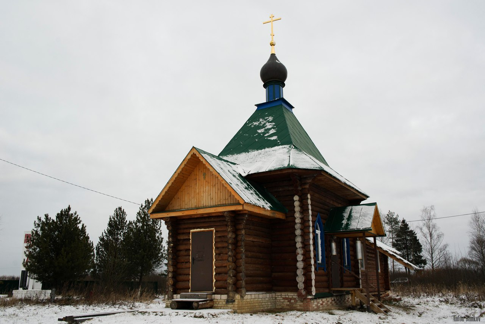

Ильино
География
Деревня Ильино находиться в 11 км от центра Головинского сельского поселения, в составе которого и находится. К северу от нее протекате река Высокуша - приток Каменки.
История
Деревня впервые упоминается в писцовых книгах монастырских и церковных земель Владимирского уезда 1637—1647 годов в составе Александровского прихода с совсем небольшим населением: в ней числилось всего 5 крестьянских дворов.
Происхождение названия
Название, вероятнее всего, происходит от фамилии Ильина, или же от имени Ильи. Дать его мог либо владелец деревни, либо один из ее первопоселенцев.
Вернуться на карту

Часовня Петра Великодворского